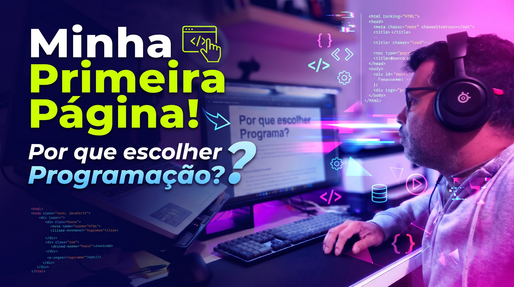
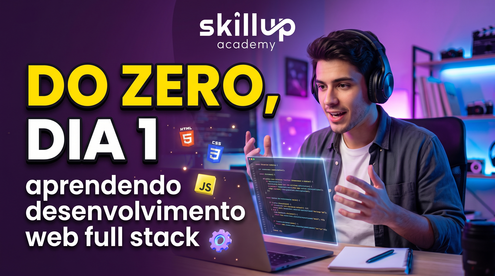

"Sobre Mim"
Antes de iniciar a minha caminhada na programação, construí uma trajetória marcada por experiências diversas e muito trabalho braçal e comunicativo. Já atuei no corte de madeira, trabalhei em talho, comandei os microfones como radialista, animei eventos como DJ e circulei pelas ruas como condutor de carro de som. Cada uma dessas funções me ensinou lições valiosas sobre disciplina, atendimento, comunicação e resiliência diante dos desafios do dia a dia.
Atualmente, trabalho na linha fabril de produção, uma rotina que reforça diariamente o meu foco e a minha capacidade de organização. Olhando para todo esse caminho percorrido, percebi que chegou o momento de dar um novo rumo à minha vida profissional. Decidi encarar o desafio da transição de carreira e escolhi a programação como o meu destino, unindo a bagagem de vida que já tenho com o poder da tecnologia para construir um novo futuro.
Início do curso de desenvolmento Web
Iniciei o meu curso de desenvolvimento Web no dia 30 de setembro de 2026, dando o primeiro passo nesta jornada. Tenho percebido que o caminho exige muita resiliência e dedicação diária; programar vai muito além de ler conteúdos. É fundamental colocar a mão na massa, escrever código linha por linha, errar, pensar em soluções e praticar constantemente para transformar a lógica em hábito.
Por que escolher Programação?
Escolher a programação é adquirir o poder de transformar ideias em soluções reais que impactam o mundo. Além
de
ser uma das áreas que mais cresce globalmente, aprender a programar desenvolve o raciocínio lógico, a
autonomia
para resolver problemas complexos e abre portas para uma carreira dinâmica, repleta de oportunidades e
aprendizado constante.
Mais do que dominar linguagens e ferramentas, o que me move é a capacidade de
transformar ideias em projetos reais e funcionais através do código. Continuo focado em construir uma base
sólida no front-end e full-stack, encarando cada nova linha escrita como uma conquista rumo aos meus objetivos
profissionais.

Dia 1: Início da jornada no desenvolvimento web full stack do zero.
Dia 2: Organização do cronograma de estudos e primeiros desafios práticos.

Dia 3: Aprendendo a estruturar conteúdos e títulos no HTML5.
Envie o seu nome para entrar em contacto: